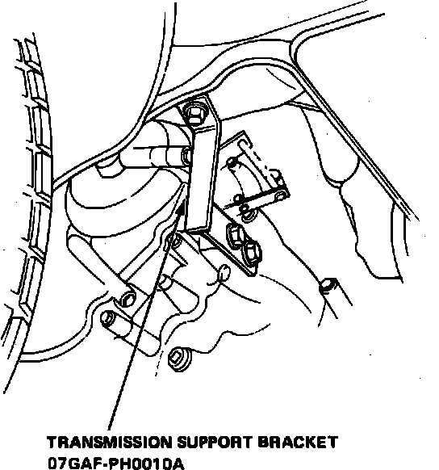
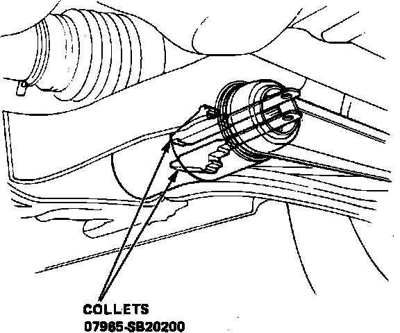
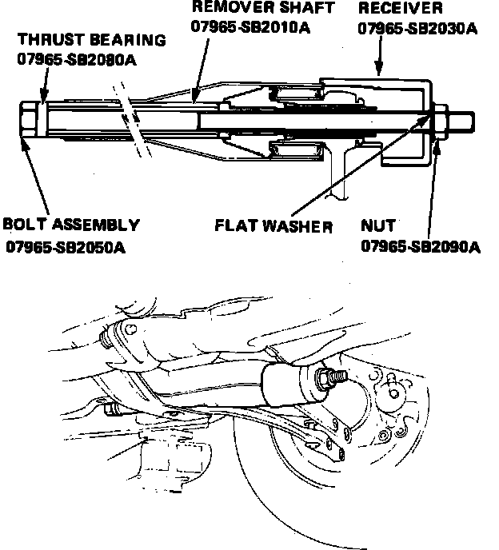
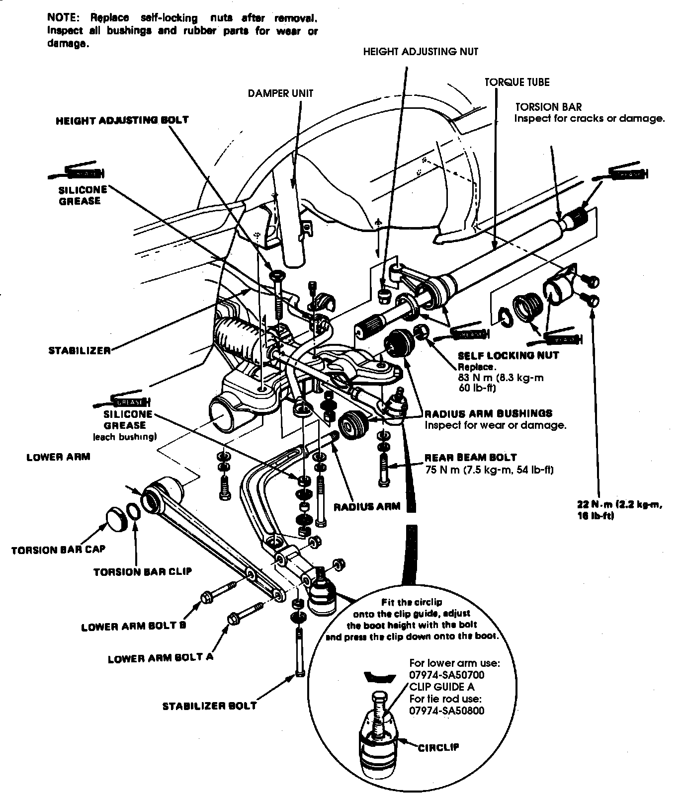
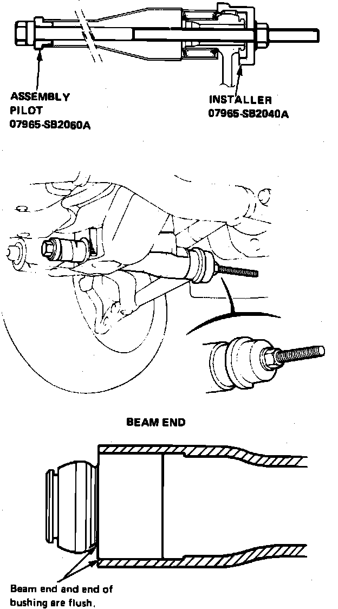

Lower Arm
Removal1. Remove torsion bar and torque bar as described under TORSION BAR.
2. Remove lower control arm to radius arm attaching nuts and bolts, then remove power steering pump bracket.
3. On models equipped with cruise control, remove cruise control actuator.
4. On all models, if replacing left side control arm, proceed as follows:
a. Remove alternator adjusting bolt and push alternator up against engine block.
b. Lift engine and position engine mount spacer into mount to raise oil pan clear of control arm.
Fig. 24 Lifting Transaxle To Allow Lower Control Arm Replacement:

Fig. 25 Lower Control Arm Collet Tool Installation:

Fig. 26 Lower Control Arm Removal:

Fig. 21 Exploded View Of Front Suspension Components:

5. On models equipped with automatic transaxle, if replacing right side control arm, proceed as follows:
a. Remove battery and battery tray.
b. Raise transaxle slightly and remove transaxle mount.
c. Install transaxle support bracket, Fig. 24, to provide clearance for control arm removal.
6. On all models, insert collets into lower control arm 180° apart, Fig. 25.
7. Slide remover shaft into bushing, Fig. 26.
8. Position thrust bearing on remover shaft bolt, then slide bolt through shaft.
9. Install receiver tool, Fig. 26, over bolt and lower arm and install flat washer and nut.
10. Hold nut with a suitable wrench and turn bolt clockwise to remove lower control arm from beam end, Fig. 21, then remove tools from beam.
Installation
Fig. 27 Lower Control Arm Installation:

1. Draw reference line through center of alignment lug cast on lower control arm and onto the bushing.
2. With thrust bearing and flat washer installed on bolt, slide assembly pilot into position, Fig. 27, then install tool into back of bushing hole in beam.
3. Position lower control arm on bolt and align reference mark with notch on beam bushing mount.
4. Position installer tool, flat washer and nut on bolt.
5. Hold nut with a suitable wrench and turn bolt clockwise to pull control arm into position. Draw control arm on until edge of bushing's steel outer sleeve is flush with end of beam, then remove tools from beam.
6. Remove any tools previously installed to lift engine or transaxle and install any components that were removed.
7. Reverse remainder of removal procedure to complete installation.